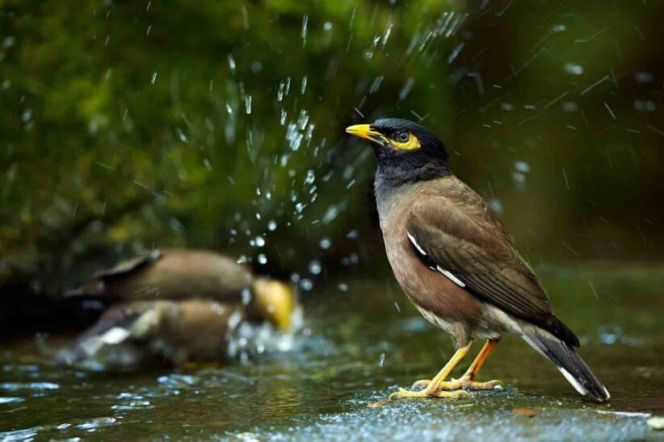
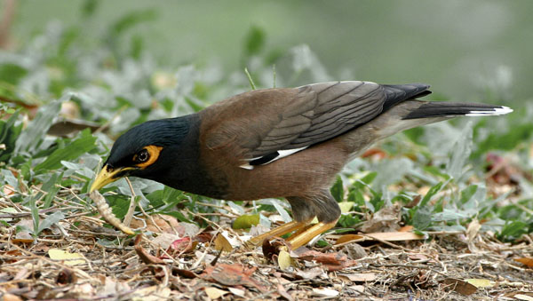
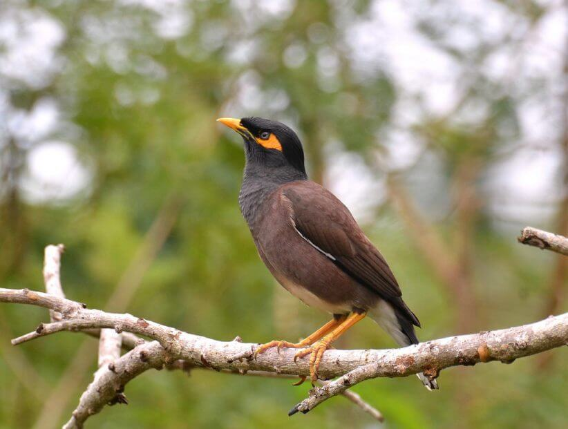
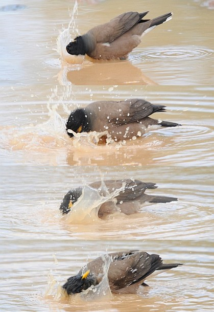
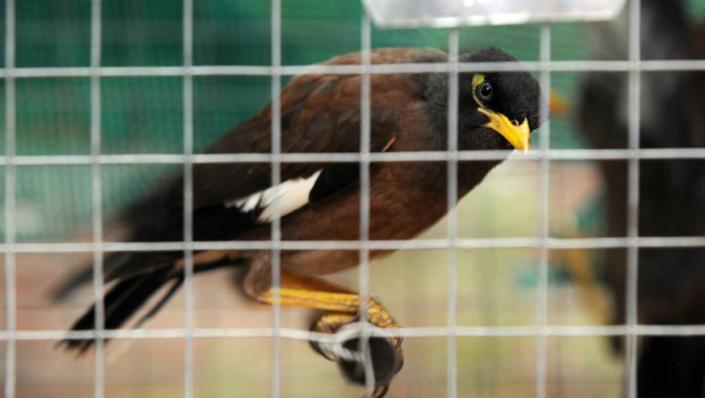

مرغ مینا (common mynah) یه پرنده باهوش، بانمک و مقلد صدای عالی از خونواده سارها است که نگهداری ازش به عنوان حیوان خانگی توی ایران متداوله. ولی متاسفانه به دلیل نبودن اطلاعات درست در مورد نگهداری از مرغ مینا، بسیاری از اون ها بیمار و تلف میشن.
دلیل محبوبیت نگهداری از مینا، بیشتر بخاطر قدرت این پرنده در حرف زدن و تقلید صدا هست. در بین پرندههایی که به عنوان حیوان خانگی توی ایران نگهداری میشن، بعد از کاسکو، این پرنده بیشترین توانایی تقلید صدا رو داره. در ادامه مقاله با وبسایت حیوانات خانگی پت پُرس همراه باشین تا روش های نگهداری درست از این پرنده زیبا رو باهم مروز کنیم
شکل و ظاهر پرنده مرغ مینا
بدن مرغ مینای اصل قهوه ای پرهای و سر و گردنش مشکی هستن. نوک و پاهاش زرد رنگه و روی سرش یه سری پرهای سیاه بهم چسبیده داره که وقتی کنجکاو یا هیجان زده میشه، کمی پف میکنن و ظاهر جالبی به این پرنده میدن. شبیه یه پسر اتو کشیده که موهاش رو روغن زده!
دور چشم هاش هاله زرد رنگ داره و نوک دم و بال هاش سیاه و سفید رنگ هستن.
آیا مرغ مینا سفید هم وجود داره؟
همونطور که گفتیم رنگ اصلی مرغ مینا مشکی با نوک و پاهای زرد رنگه. با این حال گونهای نادر و کمیاب از مرغ مینا در مناطق بالی اندونزی وجود داره که رنگ سفیدی داره و به مرغ مینای بالی معروفه.
البته این مینا از لحاظ رده بندی با مرغ مینای عادی متفاوته. این پرنده بسیار نادر و کمیابه و نسلش در حال انقراضه؛ به همین دلیل به هیچ وجه به عنوان حیوان خانگی نگهداری نمیشه.
صدای مرغ مینا چطوریه؟
مینا توانایی فوقالعادهای در تقلید صدا داره و انواع صداها و آواها رو میتونه تقلید کنه. اما صدای اصلی مرغ میناها و آواز خوندنشون رو میتونید در فایل صوتی زیر بشنوید.
مینا نماد چیست؟
اسم مینا از کلمه هندی maina گرفته شده که به معنی پرندهای از خانواده سار (استوماتیده) هست. جالبه بدونید در فرهنگ هندی این پرنده نماد عشق جاودانه است؛ چون این پرنده معمولا در طول زندگیش فقط یه جفت داره.
مرغ مینا چند سال عمر میکند؟
میناها در طبیعت حدود ۴ سال عمر میکنن ولی در منزل شما در صورت نگهداری درست ۱۲ سال یا حتی بیشتر هم میتونن عمر کنن.

آیا مرغ مینا قیمت زیادی داره؟
این پرنده در مقایسه با سایر پرندگان خانگی و به ویژه طوطیها قیمت متوسطی داره. قیمت مرغ مینا به عوامل مختلفی مثل قدرت و توانایی حرف زدن بستگی داره و به طور کلی بین ۲۰۰ هزار تومان تا ۲ میلیون تومان به فروش میرسه.
از کجا بفهمیم مرغ مینا چند سالشه؟
اگه مرغ میناتون رو از بچگی پیش خودتون آوردید که هیچ. اما اگه یه پرنده بزرگسال رو میخواید بخرید و ازش نگهداری کنید حتما دوست دارید سن و سالشو بدونید. در این مورد پیشنهاد اول ما مشورت با دامپزشک هست، دامپزشک با معاینه پرها، نوک و پنجهها میتونه سن پرنده رو تعیین کنه.
اما به طور کلی یه راه ساده و دم دستی برای تشخیص سن حدودی و تقریبی مینا اینه:
به دور چشم پرنده دقت کنید. اگه پوست دور چشمش سفید و بدون چروکه پس مرغ مینا جوونه. اگه به رنگ تیرهتر و کرم باشه مرغ مینا میانساله و اگه دور چشمش زرد و چروک باشه پرندهتون مسن و پیر حساب میشه.
از کجا بفهمیم مرغ مینا ماده است یا نر؟
یکی از تفاوتهای بارز مرغ مینای ماده و نر جثه اوناست. پرنده نر معمولا جثه بزرگتری نسبت به ماده داره و رنگ پرهاش هم پررنگ تره. اگه تنها یه پرنده ندارید و نمیتونید ار طریق مقایسه جثه جنسیت رو تشخیص بدید به سقف دهنش دقت کنید. مرغ مینای ماده سقف دهنش زرده؛ در حالیکه سقف دهن پرنده نر سیاهه.
البته این روشها ۱۰۰% دقیق و معتبر نیستن و پیشنهاد میکنیم برای اطمینان بیشتر از جنسیت پرندهتون با دامپزشک مشورت کنید. دامپزشک در صورت لزوم با انجام آزمایش DNA میتونه جنسیت پرنده رو به طور قطعی مشخص کنه.

معنی حرکات مرغ مینا و خلقیات این پرنده
مینای سخنگو یه پرنده فوق العاده باهوش و کنجکاو و البته در برخی موارد خشن هست. این پرنده نسبت به طوطی ها خیلی پر انرژی تر و تیز تره و حرکاتش تند تر هست.
این پرنده هم مثل کلاغ، به اشیایی که میدرخشن و رنگ های تند مثل قرمز دارن، علاقه فراوانی داره. برای همین مراقب باشین که این اشیاء توسط مینا بلعیده نشن.
در مورد خرید پرنده مرغ مینا باید بگم بهتره این پرنده رو در سن پایین بین ۶ تا ۸ هفتگی خریداری کنین و از همون سن کم به روابط با آدم ها عادتش بدین تا دستی بشه.
میناهایی که از بچگی از بودن کنار آدم ها عادت نمیکنن، ممکنه بعدا خشن بشن و نوک بزنن.
با مرغ میناهایی که نوک میزنن و خشونت نشون میدن چه باید کرد؟
مشکل پرخاشگری در مرغ مینای سخنگو و نوک زدن این پرنده به برخی افراد خونواده در بیشتر میناها دیده میشه.
درسته که مرغهای مینا کمتر از طوطیهایی مثل مرغ عشق یا باجریگار و عروس هلندی یا کوکاتیل، کاسکو و … اهلی شده و جزو دسته حیوانات خانگی هم به حساب نمیاد ولی اینکه مرغ مینا ذاتا بدجنس و پرخاشگره درست نیست.
این مشکل به دلایل مختلفی به وجود میاد و برای پرخاشگری این پرنده هم مثل همه حیوانات دیگه دلایل و راه حل هایی وجود داره.
برای اینکه بتونیم خشونت مینا رو درمان کنیم اول باید بفهمیم خشونت نشون دادنش به چه دلیله و بعد روش تربیتی مناسب رو انتخاب کنیم.
علت نوک زدن و پرخاشگری مینا یکی از مهم ترین سوالات شما در سال گذشته و در قسمت نظرات سایت بوده. برای همین تصمیم گرفتیم کتاب الکترونیکی رفع پرخاشگری در مرغ مینا رو بنویسیم تا بهتون در مورد این مساله کمک کنه.
در این کتاب در هر بخش اول دلیل رفتار خشونت آمیز مرغ مینا رو بررسی می کنیم و بعد میریم سراغ راه حل تربیتی اش.

مرغ مینای سخنگو چه غذایی میخورد؟
یکی از بزرگ ترین اشتباهاتی که در مورد نگهداری از این پرنده انجام میشه در مورد انتخاب غذا و رژیم غذاییه.
متاسفانه بیشتر پرنده فروشی ها در کشورمان ایران موقع فروش این پرنده، به خریدار «دونه پارس» میفروشن و دونه پارس رو به عنوان غذای اصلی مینا معرفی میکنن، در صورتی که دادن دونه پارس به این پرنده بزرگ ترین اشتباهیه که میتونین در نگهداری از این پرنده مرتکب بشین.
دانه پارس چیست؟ چرا نباید برای مینا استفاده شود؟
دونه پارس یه نوع پلت هست که در صنعت پرورش دام و طیور به عنوان غذا استفاده میشه. پلت یعنی مخلوطی از مواد مختلف خرد شده و میکس شده که توسط دستگاه فشرده شده و سپس به فرم استوانه های ریز قالب زده شدن.
پایه پلت های پارس یا همون دونه پارس ذرت و سویا و گندم و غلات دیگه هست. مهم ترین دلیل مضر بودن دانه پارس برای مینا اینه که این پلت ها حاوی مقادیر بالایی از آهن هستن و پرندهتون رو دچار بیماری ذخیره آهن میکنن. این بیماری باعث از کار افتادن کبد پرنده و در نهایت مرگ پرنده میشه.
غذای مینا در طبیعت
مینا پرنده ای همه چیز خواره و در طبیعت از:
- حشرات و لارو اون ها
- دوزیستان
- مارمولک ها
- طیف وسیعی از میوه ها
- تخم پرنده های دیگه
- نوزاد پرنده های دیگه
تغذیه میکنن.
موضوع تغذیه این پرنده خیلی مهمه و دادن غذای اشتباه میتونه دستگاه گوارش این پرنده سخنگو رو دچار اختلال کنه. ما توی مقاله غذای مرغ مینا به صورت کامل در مورد اینکه غذای مرغ مینا چیست و اینکه چه خوارکی هایی براش مناسبه صحبت کردیم.
بهترین غذای مرغ مینا
کامل ترین غذا برای مینا، باید مخلوطی از لیست زیر باشه:
- ۷۰ درصد غذاش باید پلت های تجاری مخصوص مرغ مینا (با عکس خودش روی بسته بندی) باشه که کمتر از ppm90 یا ۹۰ میلی گرم در هر کیلوگرم آهن داره.
- تنوع بالایی از میوه ها و سبزیجات (لیست رو کمی پایین تر آوردم)
- آب تازه
- حشرات با پوشش سخت مثل جیرجیرک یا میل ورم (روزی ۱ عدد یا یک روز درمیان)
این غذاها به صورت تجاری موجود هستن و فروشگاه های آنلاین معروف مثل دیجی کالا هم اونا رو به فروش میرسونن.



میوه های مفید برای مینا
شما میتونین بسته به فصل، انواعی از این میوه ها رو در اختیار مینا قرار بدین:
- سیب
- گیلاس
- هلو
- گلابی
- نخود فرنگی
- مارچوبه
- موز
- ذرت
- آناناس
- میوه های دیگه هم مضر نیستن ولی باید با احتیاط مصرف بشن
توجه: آووکادو برای این پرنده سمی هست
توجه ۲: اگر مینای شما میوهای رو نمیخوره، به گذاشتن میوه براش ادامه بدین و ناامید نشین تا کم کم عادت کنه. میوه ها رو تا جایی که میتونین ریز کنین.
آیا باید به مرغ مینام مکمل غذایی بدم؟
خیر، اگر غذاهایی که در اختیارش میگذارین از لیست بالا باشه و ۷۰ تا ۸۰ درصد غذای روزانه اش هم پلت مخصوص مرغ مینا باشه نیازی به مکمل غذایی پیدا نمیکنه.
در واقع، مکمل های غذایی برای مرغ مینا باید خیلی خیلی با احتیاط مصرف بشن. دلیلش هم اینه که مکمل های داخل بازار بیشتر برای طوطی سانان درست شدن و برای همین دارای مقادیر زیادی از آهن هستن. به همین خاطر برای مینا خطرناک محسوب میشن.
برای اطمینان از اینکه مینای شما تمام مواد ضروری مورد نیاز بدنش رو دریافت میکنه میتونین براش غذای همراه با میل ورم یا غذای تقویتی مرغ مینا رو تهیه کنین:
سفارش غذای مرغ مینا همراه با میل ورم (از دیجی کالا)
سفارش غذای تقویتی مرغ مینا (از دیجی کالا)
بهترین روش نگهداری از مرغ مینا
در نگهداری از مینا باید ۳ تا چیز رو رعایت کنین تا مینای شما همیشه سالم و سرحال باقی بمونه:
- تغذیه مرغ مینای سخنگو که قبلا توضیح دادیم
- قفس و وسایل قفس
- آموزش دادن به مینا

ویژگیهای قفس این پرنده
این پرنده به دلیل هوش بالا و اجتماعی بودنش دوست داره به صورت مداوم نزدیک اعضای خونواده باشه. برای همین قفسش رو جایی بگذارین که دورترین حالت از آشپزخونه و نزدیک ترین حالت ممکن به محل پر رفت و آمد خونه باشه.
میناها پرنده های فعالی هستن و نیاز به فضای کافی درون قفسشون دارن که بتونن جست و خیز کنن.
اون ها در طبیعت حدود ۲۰ درصد از زمان روز رو به فعالیت اختصاص میدن.
ایده آل ترین قفس برای مینا، یه قفس بزرگ با حدود ۹۰ تا ۱۰۰ سانتی متر طول و ۶۰ سانتی متر ارتفاع هست.
کف قفس رو با چندین و چند لایه روزنامه بپوشونین و روزانه اون ها رو عوض کنین.
چوب داخل قفس مرغ مینا
چوب زیر پای مینا بسیار مهمه و باید چوب طبیعی درخت همراه با پوسته روی چوب و پستی و بلندی های طبیعی باشه.
حتما چوب های مختلف با ضخامت های مختلف (۳-۴ عدد) داخل قفسش قرار بدین.
قرار دادن ظرف حمام برای مرغ مینا
مینا ها در طبیعت بخصوص موقعی که هوا گرمه، حدودا روزی ۲ بار حمام میکنن. اونا این کار رو با هدف خیس کردن بدن و پرهاشون انجام میدن.
هر روز داخل قفسش ظرف آبی با عمق و اندازه مناسب بگذارین تا بتونه خودش رو داخل اون حمام کنه؛ این کار به تمیز موندن پرهاش کمک میکنه.
بعد از حمام پرنده شما به تمیز کردن پرهای خودش مشغول میشه و از زندگی لذت میبره!

اسباب بازی و سرگرمی برای مینا
میناها باهوشند و از بازی با اسباب بازی های متنوع لذت میبرن.
براشون زنگوله، آینه و اسباب بازی هایی که خطر بلعیده شدن ندارن قرار بدین تا سرگرم بشن و روحیه شادتری داشته باشن.
آموزش حرف زدن به مرغ مینا
مینا قدرت تقلید صدای خیلی خوبی داره و میتونه تا ۱۰۰ تا کلمه رو هم یاد بگیره. مرغ مینا رو در جوانی و بین ۶ تا ۸ هفتگی خریداری کنین تا به شما عادت کنه و برای آموزش حرف زدن به مشکل برنخورین.
برای آموزش بهش از کلمات کوتاه شروع کنین و اون کلمات رو در موقعیت های خاصی به زبون بیارین:
- مثلا وقتی میبینینش : سلااااااام مینا
- وقتی دارین از در خونه میرین بیرون: بای بای مینا
- وقتی یه خوراکی خوشمزه بهش میدین یا ظرف غذاش رو پر میکنین: مینا غذااا
- وقتی ظرف حمام براش میذارین: بدووووووو بدوووووو حموم
- اگر مینای شما حرف نمیزنه، ناامید نشین و به تلاش ادامه بدین.
مرغ مینا از چند ماهگی حرف میزند؟
مرغ میناها از حدود ۳ الی ۴ ماهگی میتونه گفتن کلمات رو یاد بگیره حدود ۲ سالگی اوج یادگیری و تقلید کلماتش هست.
آیا مرغ مینا قهر میکند؟
بله! مینا پرندهای اجتماعی و باهوشه و به سرعت به صاحبش وابسته میشه. این پرنده بسیار حساس هم هست و کوچکترین بی توجهی و کم محلی از سمت شما میتونه باعث ناراحتی و قهر کردن این پرنده بشه! مرغ مینایی که قهر کرده از آواز خوندن امتناع میکنه و ساکت میشه، رفتارهای پرخاشگرانه از خودش نشون میده و همه رو نوک میزنه، ممکنه حتی پرهاش بریزه و کچل بشه و حتی در برخی موارد شدیدتر ممکنه بمیره! بنابراین قبل از اینکه مرغ مینا بیارید از خودتون بپرسید آیا زمان و حوصله کافی برای پرنده دارم یا نه؟
علت سکوت مرغ مینا چیه؟
مینا به خاطر توانایی حرف زدنش مشهوره و خیلیها به همین دلیل اقدام به نگهداری از این پرنده زیبا میکنن. اما گاهی مرغ مینا شروع به حرف زدن نمیکنه و باعث سرخوردگی صاحبش میشه. دلایل حرف نزدن و سکوت مرغ مینا میتونه موارد زیر باشه:
- تمرین نکردن باهاش: این پرنده اگرچه قابلیت حرف زدن داره اما خودبخود شروع به حرف زدن نمیکنه و باید آموزشش بدید. از سن ۶ ماهگی باید برای مرغ میناتون روزانه وقت بذارید و با صبر و حوصله و تشویقی بهش یاد بدید یه صدا یا آوا رو تکرار کنه).
- قهر کردن مرغ مینا:مینا پرنده باهوش و حساسیه و نسبت به رفتار صاحبش حساسه. اگه محیط زندگی مناسبی نداشته باشه و مورد بی توجهی و بیمهری شما قرار بگیره ممکنه قهر کنه و یکی از نشونههای قهر کردن امتناع از آواز خوندن و حرف زدنه.
- مریض بودن: سکوت غیرطبیعی مینا میتونه در برخی موارد نشونه بیمار شدن پرندهتون باشه. اگه مرغ میناتون به طور غیرعادی بیحال و ساکته شاید بهتر باشه با یه دامپزشک مشورت کنید.

آیا مرغ مینا نیاز به واکسن دارد؟
واکسیناسیون مرغ مینا مثل حیوانات خانگی دیگه مثل سگ و گربه نیست و ضرورتی نداره. در واقع اگه این پرنده در تماس با پرندههای دیگه قرار نداره و در محیطی سالم و تمیز زندگی میکنه نیاز به واکسن نداره.
اما در مواقعی که احساس میکنین مرغ میناتون مریضه یا به تشخیص دامپزشک میتونید واکسیناسیون لازم رو برای مرغ مینا انجام بدید.
در صورتی که میخواین در مورد واکسیناسیون پرندگان اطلاعات بیشتری داشته باشین، بهتون پیشنهاد میکنیم حتما مطلب واکسن پرندگان رو هم بخونین.
درمان کچلی مرغ مینا چیه؟
یکی از مشکلاتی که ممکنه مرغ میناتون بهش دچار بشه پرریزی و کچلیه. برای درمان کچلی مرغ مینا اول باید علت اون رو متوجه بشیم. برخی از دلایل بروز این مشکل عبارتند از:
- افسردگی مرغ مینا: این پرنده بسیار روحیه حساسی داره و اگه بهش بی توجهی بشه سریع افسرده میشه و یکی از علایم افسردگی همین کچل شدنه. روزانه حداقل نیم تا ۱ ساعت برای پرندهتون وقت بذارید، باهاش بازی کنید و بهش حرف زدن یاد بدید.
- کمبود ویتامینها: مرغ مینا پرندهای همه چیز خواره و به طیف وسیعی از سبزیجات و میوهها نیاز داره. اگه تغذیهش کافی و مناسب نباشه و دچار کمبود ویتامین بشه ممکنه به کچلی دچار بشه.
- بیماریهای پوستی (قارچ، انگل و …): اگه دو مورد بالا علت کچل شدن مرغ میناتون نباشه پس شاید مبتلا به یه بیماری قارچی پوستی شده باشه. بیماریهای قارچی معمولا در سر و گردن پرنده و به صورت کچلیهای گرد و سکهای خودشون رو نشون میدن. این بیماری به سرعت گسترش پیدا میکنه و باید هرچه زودتر برای درمان پیش دامپزشک ببریدش.
معایب مرغ مینا به عنوان پرنده خانگی چیه؟
راستش این پرنده یکی از آسانترین و بیدردسرترین پرندههای خانگیه و معایبی نداره. مادامی که به پرندهها علاقه داشته باشید و وقت و هزینه کافی برای نگهداری از مینا رو هم در نظر بگیرید میتونید این پرندهی دوست داشتنی تو خونهتون داشته باشید.
مرغ مینا پرندهای سرزنده، پرانرژی و اجتماعیه که به خوبی با هرمحیط زندگی خودشو سازگار میکنه. همینطور هوش بالای این پرنده باعث شده تا سریع همه چیز رو یاد بگیره و خیلی زود به محیط قفس عادت کنه.
تنها نکته چالش برانگیز در نگهداری از مینا اینه که بعضیهاشون ممکنه عادت به نوک زدن و رفتارهای پرخاشگرانه پیدا کنن. البته میناها ذاتا خشن نیستن و این عادت یه مشکل رفتاریه و به راحتی با اصلاح شرایط زندگی مینا میشه این مشکل رو برطرف کرد.
نظر شما چیه؟
تا حالا مرغ مینا داشتید؟ شما در مورد نگهداری و آموزش به مینا چه تجربیاتی داشتین؟ لطفا برای ما کامنت بگذارید و نظر و تجربیات خودتون رو با ما و دیگر خوانندگان به اشتراک بگذارید.

سلام لطفا کمکم کنید.مینا یه دونه کش مو رو برد داخله قفسش و خورد.الان دو روزه چیزی نمیخوره.چیکار کنم.خیلی کسل شده.
پیشنهاد میکنم در صفحه دامپزشک آنلاین پت پرس عضو بشید تا بتونیم دقیقتر و سریعتر راهنمایی تون کنیم
چون حجم سوالات بسیار زیاده و قطعا دوستانی که حساب کاربری ایجاد میکنن در اولویت بالایی قرار میگیرن
سلام خسته نباشین مطالب سایتتون عالیه چند تا سوال در مورد مرغ مینا دارم من یه مرغ مینا دارم قشنگ حرف میزنه خیلی هم دستیه نوک نمیزنه خیلی خیلی هم پر انرژیه معلومه مریض نیست ولی الان یه ماهه داخل نوکش سیاه شده و روز بروز سیاهیش بیستر میشه نشانه ی چیه ؟ و اینکه لاغرم هست البته خیلی نه از اول لاغر بود غذایی نیست بهش بدم یکم چاق تر بشه؟
سلام دوست عزیز
به دلیل حجم بالای سوالات امکان پاسخگویی به آن ها در قسمت نظرات نیست.لطفا برای گرفتن پاسخ خود از طریق لینک زیرثبت نام کرده و سوال خود را مستقیم از دامپزشک بپرسید.
دامپزشک آنلاین پت پرس
سلام بزرگوار
من میخوام مرغ مینا ۸ ماهه نیمه رام بگیرم.ایا میتونم دستی اش کنم که تو خانه ازاد باشه و اینکه میتونم بهش چیزی یاد بدم
سلام دوست عزیز
به دلیل حجم بالای سوالات امکان پاسخگویی به آن ها در قسمت نظرات نیست.لطفا برای گرفتن پاسخ خود در صفحه دامپزشک آنلاین ثبت نام کرده و سوال خود را مستقیم از دامپزشک بپرسید.
سلام بزرگوار
من میخوام مرغ مینا ۸ ماهه نیمه رام بگیرم.ایا میتونم دستی اش کنم که تو خانه ازاد باشه و اینکه میتونم بهش چیزی یاد بدم
سلام دوست عزیز
به دلیل حجم بالای سوالات امکان پاسخگویی به آن ها در قسمت نظرات نیست.لطفا برای گرفتن پاسخ خود در صفحه دامپزشک آنلاین ثبت نام کرده و سوال خود را مستقیم از دامپزشک بپرسید.
سلام ممنون از اطلاعات خوبتون
ببخشید من حدود دو هفته ای هست دوتا مرغ مینا گرفتم یکیش یکسالشه و یکی دیگه حدود ۱۷ ماهشه اولی خوبه یه چندکلام حرف میزنه ولی خیلی نوک میزنه اما دومی خیلی حرف میزند روزی که خریدمش اما الان اصلا با خودمن حرف نمیزنه ولی با دیگران در حد سلام ومینا وبیا رو میگه فقط همین اما نمیدونم باید چکار کنم وممنون میشم راهنماییم کنید که باید چکار کنم برای برطرف کردن این مشکلات و ایا هردو مینا با هم مشکلی نداره و میتونم با هم نگهدتری کنم البته قفس هردو جداست.
سلام دوست عزیز
به دلیل حجم بالای سوالات امکان پاسخگویی به آن ها در قسمت نظرات نیست.لطفا برای گرفتن پاسخ خود در صفحه دامپزشک آنلاین ثبت نام کرده و سوال خود را مستقیم از دامپزشک بپرسید.
خیلی خوب بود
کامل و گویا بود
ممنون از سایت خوبتون.
سلام رویای عزیز
ممنون از دیدگاه زیباتون
سلام من مینام ۱سال وخورده هس ولی الان هم حرف میزنه ولی بعضی کلاماتی که بهش بگم ۱۰۰۰ بار تکرارش میکنم براش ولی نمیگه ممکن جواب سوالم بدی
وچه غذای میخوره
سلام دوست عزیز
به دلیل حجم بالای سوالات امکان پاسخگویی به آن ها در قسمت نظرات نیست.لطفا برای گرفتن پاسخ خود در صفحه دامپزشک آنلاین ثبت نام کرده و سوال خود را مستقیم از دامپزشک بپرسید.
سلام وخسته نباشید
یه مینا دارم بیست روزه بوده خانومم خیلی باهاش تمرین می کرد توی ۵ ماهگی شروع کرد به حرف زدن عاشق بیرونبودن از قفسه تا دو ماه پیش که هفت ماهش بود دیگه حرف نمی زنه البته ابتدا براش قفس بزرگ درست کرده بودم چند وقتی قفس اماده خریدم ۴۵* ۸۰ می شه رنگ مشکی
غذای خارجی براش می خرم برند orlux
نمی دونم از غذای جدیدشه البته تواین مدت سه مدل غذا جدید براش گرفتم
فضله هاشم دیگه مثل قبل مثل هسته خرما سفت نیست بیشتر وقتا سفید و ابکی شده
البته خودش توی قفس نمیره هر روشی که باهاش می بردیمش توی قفس دیگه انجام نم یده مثلا عاشق خرما بود برای خرما می رق توی قفس حالا نمیره باید چراغ هارو خاموش کنیمبه زور بگیریمش تا بزاریم توی قفس ولی همیشه روی شونده های من می شینه الانم دیگه حرف زدن ترک کرده فقط می خونه به نظر شما چکار کنم
سلام دوست عزیز
به دلیل حجم بالای سوالات امکان پاسخگویی به آن ها در قسمت نظرات نیست.لطفا برای گرفتن پاسخ خود در صفحه دامپزشک آنلاین ثبت نام کرده و سوال خود را مستقیم از دامپزشک بپرسید.
سلام وقتتون بخیر. ما جدیدا یه مرغ مینا گرفتیم، فروشنده گفته ۶-٧ ماهشه، دور چشمش زردِ تیرس نمیدونم سنشو راست گفته یا نه. اصلا به ادم ها عادت نداره و تا نزدیک قفس میشیم خودشو به در و دیوار قفس میزنه و این کارش خیلی ناراحت کنندس. ممکنه که به ما عادت کنه یا سنش زیادِ و باید آزادش کنیم؟
دوست عزیز
سن مینا رو از روی چشمش نمیشه تشخیص داد.
بله فعلا بهش کاری نداشته باشید تا بهتون اعتماد کنه
اصلا سعی نکنین بگیریدش یا به قفسش دست بزنید به حال خودش بذاریدش تا وقتی بهتون اعتماد پیدا کنه و وقتی نزدیکش میشید خودشو به قفس نزنه.
بعد میتونین کم کم شروع کنین به حرف زدن بهش و بهتر کردن ارتباطتون.